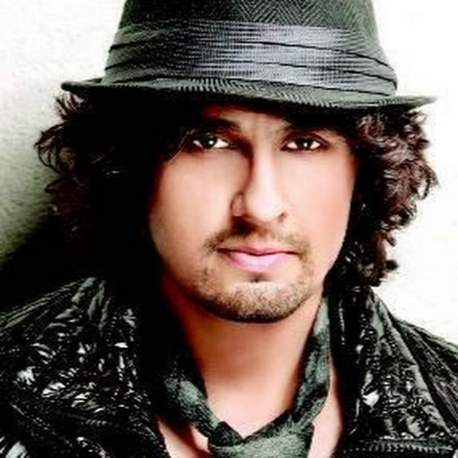

Sonu Nigam (born 30 July 1973, Faridabad , Haryana , India ) is a famous singer of Hindi films. Apart from Hindi , he has also sung in Kannada , Oriya , Tamil , Assamese , Punjabi , Bengali , Marathi and Ganga-Jamunamata Mandir Arjuni Morgaon films. He has made several indie-pop albums and has worked in a few Hindi films.
Sonu Nigam has been singing since the age of four. He first sang Mohammad Rafi 's song 'Kya Hua Tera Vaada' on stage with his father . Since then, he started singing with his father in weddings and parties. As he grew up, he started participating in music competitions. At the age of 19, he moved to Mumbai with his father to make singing his profession. He took education from classical singer Ustad Ghulam Mustafa Khan